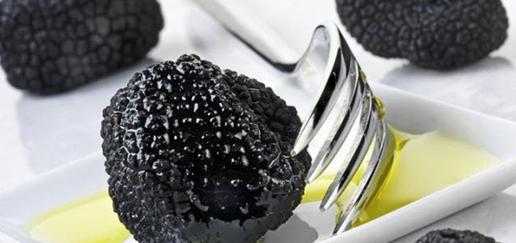

Cooking Truffles
Amato e desiderato da tutti gli intenditori di tutto il mondo, il tartufo bianco è troppo spesso sostituito da suoi pari di qualità inferiore, o ancora peggio da prodotti artificiali, seguici in questa avventura del gusto!

Cavolfiore crostini con salsa caterina
Ingredienti per 4 persone :
1 testa di cavolfiore, tagliato a cimette
2 cucchiai di sale
3 cucchiai di Salsa Caterina
8 fette di pane casereccio italiano
1 spicchio d'aglio, tagliato a metà
una grande pentola di acqua a bollire.
Istruzioni :
Aggiungere il sale e il cavolfiore, e cuocere fino a molto teneri, circa 10 minuti. Scolate il cavolfiore molto bene, e metterlo in una ciotola capiente. Aggiungere la "Salsa Caterina" e schiacciare bene con una forchetta. Nel frattempo, tostare il pane, e strofinare con aglio. Disporre il pane su un piatto, e diffondere la miscela cavolfiore in ogni fetta. Buon appetito! Da Tartuflange
Omelette con Tartufo
Ingredienti per 4 persone :
2 cucchiaino di burro
3 uova
2 cucchiai di formaggio Parmigiano grattugiato
Tartufo Nero Estivo
20g sale e pepe
Istruzioni :
In una piccola ciotola, sbattere leggermente le uova. Aggiungere il parmigiano, sale e pepe, il tartufo a fette e il succo di tartufo del vaso. In una padella soffriggere mezzo, scaldare il burro a fuoco medio.Preparare il mix di uova nella padella calda. Una volta che le uova sono quasi completamente cotti, piegare la frittata a metà e cuocere 2 minuti in più fino a quando sono impostate le uova. Servite immediatamente. Da Tartuflange
Asparagi e formaggio Fondue con Tartufo
Ingredienti per 4 persone :
16 Asparagi freschi
1 Caraffa di formaggio fondue
Tartufo nero estivo
Istruzioni :
Lavare gli asparagi e tagliare la parte bianca del gambo. Portate una pentola piena di acqua a ebollizione e cuocere gli asparagi per circa 10 minuti. Scolate gli asparagi molto cerefully e disporle sul piatto di portata caldo. In un pentolino, versare la fonduta di formaggio e scaldare per 2 minuti. Versare la fonduta calda sulla asparagi e servire subito, a caldo. Da Tartuflange